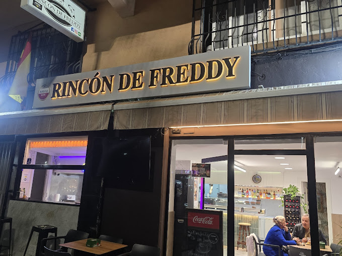
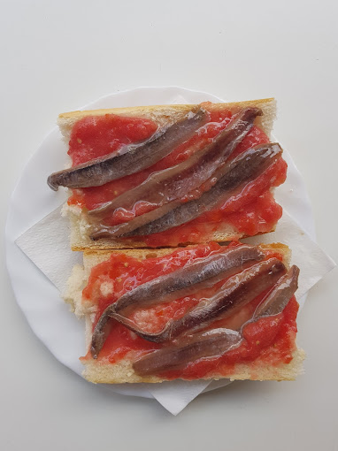
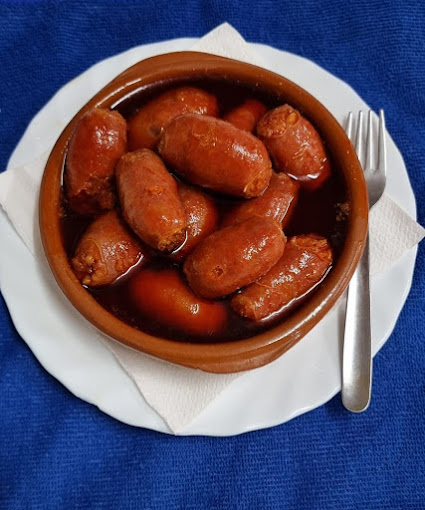

Historia
Empezamos como un punto de encuentro para vecinos y visitantes que buscaban desayunar bien y comer mejor. Con el tiempo, la propuesta creció sin perder cercanía: recetas sencillas, sabor limpio y un servicio que escucha al cliente.
Cafetería y restaurante en Benidorm
Rincón de Freddy combina desayunos generosos, tapas con carácter, bocadillos recién hechos y una carta pensada para disfrutar sin prisas en una atmósfera luminosa, amable y auténtica.

Sobre nosotros
Rincón de Freddy nace con la idea de ofrecer una mesa honesta en un entorno relajado. Cuidamos la materia prima, el ritmo del servicio y la experiencia completa para que cada visita sea agradable desde el primer saludo hasta el último café.
Empezamos como un punto de encuentro para vecinos y visitantes que buscaban desayunar bien y comer mejor. Con el tiempo, la propuesta creció sin perder cercanía: recetas sencillas, sabor limpio y un servicio que escucha al cliente.
La terraza es uno de los espacios más queridos de la casa. Recibe la brisa del Mediterráneo, tiene mesas cómodas y funciona tanto para un desayuno corto como para una comida larga con sobremesa y conversación.
La cocina trabaja con producto fresco y una carta pensada para distintos momentos del día. Buscamos un ambiente cálido, luminoso y cuidado, donde el detalle visual acompañe al sabor sin distraerlo.
Carta
La carta mezcla clásicos mediterráneos con desayunos completos, cafés especiales, batidos naturales y bocadillos abundantes. Todo con una presentación limpia y una cocina que respeta el producto.



Opiniones
“Repitió cada día de su estancia, incluida Navidad, por lo limpio y acogedor del local.”
Rosanne (Leicester, Reino Unido)“ Lo llama su desayuno perfecto en Benidorm: mejor café de la ciudad y buen precio.”
Michell C.“En su segunda visita destaca las tapas, el café y el trato del personal.”
Gavin (Larbert, Reino Unido)Últimos artículos
 Desayunos
DesayunosVen a Rincón de Freddy y disfruta de desayunos desde las 5:30 AM, tapas caseras, sardinas a la plancha y el mejor ambiente para compartir.
Leer artículo Ambiente
AmbienteDesde España apoyamos a La Tri con el mismo sabor de casa. ¿Cuál es tu pronóstico para el partido? Déjanos tu marcador en los comentarios.
Leer artículo Ambiente
AmbienteMientras la playa despierta, nosotros ya estamos preparando el primer café del día, las tostadas y nuestras sardinas frescas.☕️🌅 Porque los mejores días empiezan temprano. 📍Rincón de Freddy Av. Jaime I, 48, Benidorm ¿Team desayuno temprano o team tapas al mediodía? 👇 • • #Benidorm #BenidormFood #DesayunosBenidorm #TapasBenidorm #Sardinas
Leer artículoHorario y contacto
Lunes a viernes: 08:00 - 23:00
Sábado y domingo: 08:30 - 23:30
Reserva tu mesa
Rincón de Freddy está preparado para recibirte con producto fresco, servicio atento y una carta que funciona de la mañana a la noche.
Reservar por WhatsApp